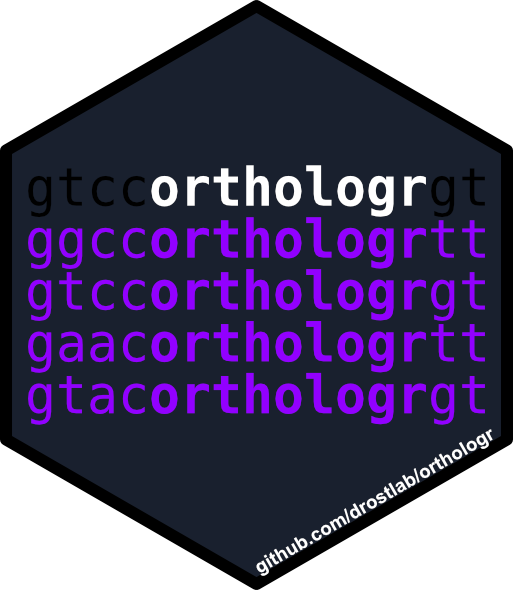

Protein Clustering with DIAMOND DeepClust
2026-10-08
Source:vignettes/deepclust.Rmd
deepclust.RmdDIAMOND DeepClust is a cascaded, ultra-fast method for clustering protein sequences at scale. It extends DIAMOND2 with a multi-pass clustering strategy that retains sensitivity at low sequence identity, making it practical for large proteome comparisons where reciprocal best hit methods become computationally expensive.
orthologr has three functions for working with
diamond deepclust:
-
deepclust()— cluster a set of protein sequences into homologous groups -
deepclust_annotate()— attach metadata to clusters -
deepclust_realign()— refine the alignment of sequences within each cluster
All three functions work with protein sequences only.
deepclust()
deepclust() takes a fasta file of protein sequences and
returns a data frame mapping each sequence to a cluster ID.
library(orthologr)
clusters <- deepclust(
input_file = c(
system.file('seqs/ortho_thal_aa.fasta', package = 'orthologr'),
system.file('seqs/ortho_lyra_aa.fasta', package = 'orthologr')
)
)
#> Running diamond version 2.2.1 ...
#> Merging 2 input files ...
#> Merged 40 sequences into: deepclust_merged_2_files.fasta
#> Building DIAMOND2 database for deepclust ...
#> Running diamond deepclust ...
#> diamond deepclust completed in 0.78 sec.
clusters
#> # A tibble: 40 × 2
#> representative_id member_id
#> <chr> <chr>
#> 1 333551|PACid:16057793 333551|PACid:16057793
#> 2 333551|PACid:16057793 AT1G01040.1
#> 3 470155|PACid:16047984 AT1G01220.1
#> 4 470155|PACid:16047984 470155|PACid:16047984
#> 5 470177|PACid:16043374 AT1G01060.3
#> 6 470177|PACid:16043374 470177|PACid:16043374
#> 7 AT1G01190.1 311315|PACid:16059488
#> 8 AT1G01190.1 AT1G01190.1
#> 9 918858|PACid:16049140 AT1G01120.1
#> 10 918858|PACid:16049140 918858|PACid:16049140
#> # ℹ 30 more rows
deepclust_annotate()
deepclust_annotate() takes the output of
deepclust() and attaches functional annotations to each
cluster.
annotated <- deepclust_annotate(
input_file = c(
system.file('seqs/ortho_thal_aa.fasta', package = 'orthologr'),
system.file('seqs/ortho_lyra_aa.fasta', package = 'orthologr')
)
)
#> Building sequence ID library from 2 file(s) ...
#> Sequence ID library built in 0 sec.
#> Running diamond version 2.2.1 ...
#> Merging 2 input files ...
#> Merged 40 sequences into: deepclust_merged_2_files.fasta
#> Building DIAMOND2 database for deepclust ...
#> Running diamond deepclust ...
#> diamond deepclust completed in 0.79 sec.
#> Joining sequence library onto cluster result ...
#> Left join completed in 0.05 sec.
annotated
#> # A tibble: 40 × 3
#> representative_id member_id file_name
#> <chr> <chr> <chr>
#> 1 333551|PACid:16057793 333551|PACid:16057793 ortho_lyra_aa.fasta
#> 2 333551|PACid:16057793 AT1G01040.1 ortho_thal_aa.fasta
#> 3 470155|PACid:16047984 AT1G01220.1 ortho_thal_aa.fasta
#> 4 470155|PACid:16047984 470155|PACid:16047984 ortho_lyra_aa.fasta
#> 5 470177|PACid:16043374 AT1G01060.3 ortho_thal_aa.fasta
#> 6 470177|PACid:16043374 470177|PACid:16043374 ortho_lyra_aa.fasta
#> 7 AT1G01190.1 311315|PACid:16059488 ortho_lyra_aa.fasta
#> 8 AT1G01190.1 AT1G01190.1 ortho_thal_aa.fasta
#> 9 918858|PACid:16049140 AT1G01120.1 ortho_thal_aa.fasta
#> 10 918858|PACid:16049140 918858|PACid:16049140 ortho_lyra_aa.fasta
#> # ℹ 30 more rowsor use a named list to control the file_name column labels
annotated <- deepclust_annotate(
input_file = list(
"thal" = system.file('seqs/ortho_thal_aa.fasta', package = 'orthologr'),
"lyra" = system.file('seqs/ortho_lyra_aa.fasta', package = 'orthologr')
)
)
#> Building sequence ID library from 2 file(s) ...
#> Sequence ID library built in 0 sec.
#> Running diamond version 2.2.1 ...
#> Merging 2 input files ...
#> Merged 40 sequences into: deepclust_merged_2_files.fasta
#> Building DIAMOND2 database for deepclust ...
#> Running diamond deepclust ...
#> diamond deepclust completed in 0.79 sec.
#> Joining sequence library onto cluster result ...
#> Left join completed in 0 sec.
annotated
#> # A tibble: 40 × 3
#> representative_id member_id file_name
#> <chr> <chr> <chr>
#> 1 333551|PACid:16057793 333551|PACid:16057793 lyra
#> 2 333551|PACid:16057793 AT1G01040.1 thal
#> 3 470155|PACid:16047984 AT1G01220.1 thal
#> 4 470155|PACid:16047984 470155|PACid:16047984 lyra
#> 5 470177|PACid:16043374 AT1G01060.3 thal
#> 6 470177|PACid:16043374 470177|PACid:16043374 lyra
#> 7 AT1G01190.1 311315|PACid:16059488 lyra
#> 8 AT1G01190.1 AT1G01190.1 thal
#> 9 918858|PACid:16049140 AT1G01120.1 thal
#> 10 918858|PACid:16049140 918858|PACid:16049140 lyra
#> # ℹ 30 more rows
# Stricter clustering with custom thresholds
annotated <- deepclust_annotate(
input_file = c(
system.file('seqs/ortho_thal_aa.fasta', package = 'orthologr'),
system.file('seqs/ortho_lyra_aa.fasta', package = 'orthologr')
),
approx_id = 50,
mutual_cover = 90,
comp_cores = 4
)
#> Building sequence ID library from 2 file(s) ...
#> Sequence ID library built in 0 sec.
#> Running diamond version 2.2.1 ...
#> Merging 2 input files ...
#> Merged 40 sequences into: deepclust_merged_2_files.fasta
#> Building DIAMOND2 database for deepclust ...
#> Running diamond deepclust ...
#> diamond deepclust completed in 0.6 sec.
#> Joining sequence library onto cluster result ...
#> Left join completed in 0 sec.
annotated
#> # A tibble: 40 × 3
#> representative_id member_id file_name
#> <chr> <chr> <chr>
#> 1 333551|PACid:16057793 333551|PACid:16057793 ortho_lyra_aa.fasta
#> 2 333551|PACid:16057793 AT1G01040.1 ortho_thal_aa.fasta
#> 3 470155|PACid:16047984 AT1G01220.1 ortho_thal_aa.fasta
#> 4 470155|PACid:16047984 470155|PACid:16047984 ortho_lyra_aa.fasta
#> 5 470177|PACid:16043374 AT1G01060.3 ortho_thal_aa.fasta
#> 6 470177|PACid:16043374 470177|PACid:16043374 ortho_lyra_aa.fasta
#> 7 AT1G01190.1 311315|PACid:16059488 ortho_lyra_aa.fasta
#> 8 AT1G01190.1 AT1G01190.1 ortho_thal_aa.fasta
#> 9 918858|PACid:16049140 AT1G01120.1 ortho_thal_aa.fasta
#> 10 918858|PACid:16049140 918858|PACid:16049140 ortho_lyra_aa.fasta
#> # ℹ 30 more rows
deepclust_realign()
deepclust_realign() refines the multiple sequence
alignment within each cluster, which can improve downstream dN/dS
estimation or phylogenetic inference.
realign_result <- deepclust_realign(
input_file = c(
system.file('seqs/ortho_thal_aa.fasta', package = 'orthologr'),
system.file('seqs/ortho_lyra_aa.fasta', package = 'orthologr')
),
clusters = clusters
)
#> Running diamond version 2.2.1 ...
#> Merging 2 input files ...
#> Merged 40 sequences into: deepclust_merged_2_files.fasta
#> Building DIAMOND2 database for realign ...
#> Running diamond realign ...
#> diamond realign completed in 1.02 sec.
realign_result
#> # A tibble: 40 × 7
#> representative_id member_id approx_pident evalue bitscore qcovhsp scovhsp
#> <chr> <chr> <dbl> <dbl> <dbl> <dbl> <dbl>
#> 1 311313|PACid:16057125 311313|PACid:16057125 100 1.05e- 82 229 100 100
#> 2 311313|PACid:16057125 AT1G01210.1 98.5 1.18e- 79 221 100 100
#> 3 333544|PACid:16034284 333544|PACid:16034284 91.2 0 984 100 100
#> 4 333544|PACid:16034284 AT1G01110.2 85.5 0 914 100 100
#> 5 333551|PACid:16057793 AT1G01040.1 88.9 0 3541 99.9 99.7
#> 6 333551|PACid:16057793 333551|PACid:16057793 95.2 0 3830 100 100
#> 7 470155|PACid:16047984 470155|PACid:16047984 97.1 0 2110 100 100
#> 8 470155|PACid:16047984 AT1G01220.1 94.5 0 2046 100 100
#> 9 470156|PACid:16041002 470156|PACid:16041002 93.9 3.34e-170 461 100 100
#> 10 470156|PACid:16041002 AT1G01200.1 90.7 2.42e-163 443 100 100
#> # ℹ 30 more rowsThis feature is still under development. More information about the DeepClust algorithm can be found in the DIAMOND DeepClust paper.